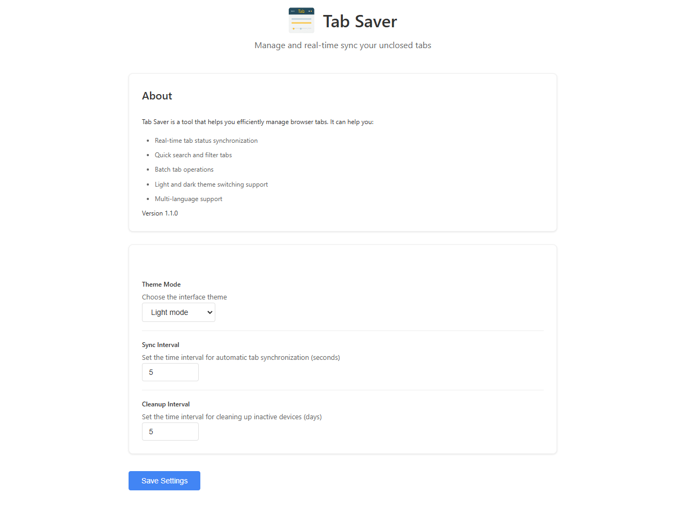
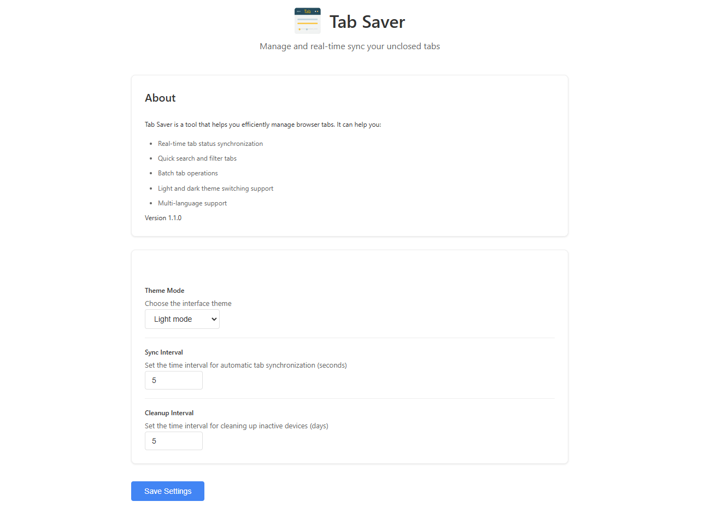

全てのデバイスでシームレスなタブ管理を
TabSaverは、複数のデバイス間でブラウザタブを簡単に管理、同期、整理できるようにサポートします。


 

主な機能
クロスデバイス同期
複数のデバイス間でタブをリアルタイムに同期します。
スマート検索
タブを素早く検索できます。
一括操作
複数のタブを一度に管理できます。
テーマサポート
ライト、ダーク、システムテーマを選択できます。
TabSaverのデモ
よくある質問
TabSaverとは?
TabSaverは、Chrome向けの強力なクロスデバイスタブ管理ツールです。タブを管理、同期、整理することができます。
- 複数のデバイス間でタブを同期します
- ブラウザタブを保存、整理します
- Chromeにログインしていれば、すべてのデバイスからタブにアクセスできます
- タブを素早く検索できます
- 直感的なインターフェースでタブを管理できます
学生、ビジネスマン、一般ユーザーなど、誰でもTabSaverを使ってタブを管理できます。
TabSaverは無料ですか?
はい、TabSaverは完全に無料です。誰でも使えるように無料で提供しています。
私のデータは安全ですか?
Chromeの同期システムを使用してデータを安全に同期します。サーバーに個人データを保存しないため、プライバシーとセキュリティを確保しています。
どのブラウザがサポートされていますか?
現在、TabSaverはGoogle Chromeのみに対応しています。将来的には他のブラウザにも対応する予定です。
どうやって始めますか?
ChromeウェブストアからTabSaverをインストールするだけです。Chromeにログインしていれば、自動的にタブを同期します。
保存したタブはどうなりますか?
保存したタブはChromeの同期ストレージに保存されます。TabSaverをアンインストールしても、同じGoogleアカウントを使用していればデータは保持されます。
外観をカスタマイズできますか?
はい、ライトテーマとダークテーマを選択できます。また、システムのテーマ設定に合わせることもできます。拡張機能のオプションページでテーマを変更できます。